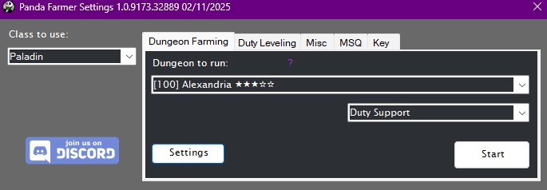
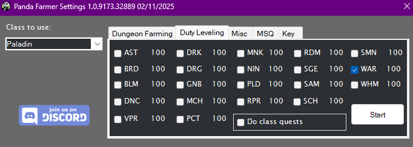
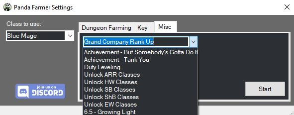
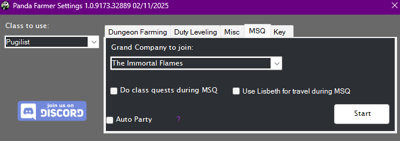
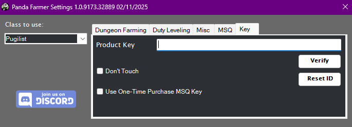

Panda Farmer¶

This plugin is intended to be a replacement for my sponsor repo. It included farming for every dungeon I have available as well as the 1-90 leveling suite using those dungeons.
Requirements¶
- RebornBuddy with active license (paid)
- Lisbeth with active license (paid)
- LlamaLibrary (free)
- LlamaUtilities (free)
- Platypus (free+)
- Duty Mechanics (free)
Purchasing¶
You can request a 72 hour trial of any of my plugins by joining our and typing
/trial on the #bot-spam channel.
If you're happy with the plugin and would like to purchase it, you can do so over at the Purchase page. PandaFarmer is subscription based, but there's also an option to just purchase a 30 day key.
Installation¶
- Download the latest version by following the link here.
- On the
.zipfile, right click >Properties>Unblock>Apply. - Unzip all contents into
RebornBuddy\Plugins\so it looks like this:
RebornBuddy
└── Plugins
└── PandaFarmer
├── PandaFarmerLoader.cs
├── Version.txt
├── LlamaAuth.dll
└── PandaFarmer.dll
Dungeon Farming¶

This is the main tab of Panda Farmer and as the plugin's name insinuates you'll use it for farming dungeons. You select the class you want to use on the far left side, the dungeon you want to do on the left of the tab, and how you want to queue it on the right.
Platypus is required for the profiles to run. You don't have to use it, but it needs to be installed. If you're seeing the Install Platypus button, click it and it'll install. (It may get hung trying to restart RebornBuddy. Just close RB and open it back and you should be good.)
Star Ratings¶
Some of the dungeons perform better with the bot than others. In general the ones used for farming I spend more time on getting perfected. The ones that are generally only completed once for MSQ are likely just "good enough." Meaning they may die a few times but will eventually complete the dungeon. Tanks will generally have a better time at running lower ranked dungeons due to Tank privilege.
As some of these profiles have more effort put into them versus the others I've started using a star system that will display to tell you the quality of the profiles.
- ★★★★★ - Five star profiles are the best of the best. These profiles I would trust to run AFK and even in a group of live people.
- ★★★★☆ - Four star profiles have a lot of effort into them. These profiles have working mechanics for most boss fights and will work well with NPCs. I would not recommend using them in a live party.
- ★★★☆☆ - Three star profiles are "good enough." These are profiles that I put enough effort into them so that you can use them to complete MSQ at least once, and then basically abandon. You can usually farm these reliably as long as you do them unrestricted.
- ★★☆☆☆ - Two star profiles are good enough to be used unrestricted, but likely have no custom programming for boss mechanics. As long as you're max level though you should be able to farm them relatively well.
- ★☆☆☆☆ - One star profiles are profiles that work... sometimes. They've got glaring issues that I either can't, or haven't fixed and are usually only used when you really don't want to do the duty yourself but don't mind dying a million times. While these can sometimes be completed by other jobs, tanks will typically have the best survivability on these profiles simply because of their survivability.
Settings¶
There's now a Settings button on the Dungeon Farming tab. This button will open a window that has Dungeon Farming specific settings, mainly Hello, Goodbye, and wait time. You can also choose whether you'd like to go to your GC Barracks between runs, and if you'd like to turn in items after every run. You can click the Platypus icon to open's Platypus' settings. Once done, hit start and the bot will start it's work.
I have also added a check box for Run season Events When Available. This will cause Panda Farmer to input the quest line for and seasonal events that are active whenever you press a Start button. For example if you go to farm a dungeon, it'll do the seasonal quest first before running the dungeon. It will do the same goes for any other feature of PF.
Syrcus Tower and Porta Decumana
Both Syrcus Tower and Porta Decumana are good enough to be ran with other players and frequently come up when the Moogle Tomestone event is active. You'll likely want to tweak the greeting and leave time settings to your liking.
For infoamtions sake, here are the list of pre-programmed greetings and goodbyes:
Greetings
"Hola", "Bonjour", "Hallo", "Ciao", "Konnichiwa", "What’s kicking, little chicken?", "Hello, governor!", "Whaddup bro?", "Bonjour monsieur!", "Ciao babydoll!", "Bing bing! How’s it going?", "Good day guys", "Oooo la la. This guy again", "Welcome to the club guys", "What’s sizzling?", "Whazzup?", "Ni hao ma?", "What’s up, buttercup?", "Hello!", "Hey", "Heyo", "Hihi", "Hello new friends!", "Hi new friends", "Heya", "Ello! o/", "hello!", "Hi, I just met you, and yes, this is crazy. Here’s my number – can we kill this guy, maybe?", "Hi guys", "What’s smokin’?", "How is life sailing?", "Hiya", "Hi", "Hey friends!", "Yo", "I come in peace. Okay, yeah maybe not.", "Hello, my name is Inigo Montoya.", "I'm Batman", "‘Ello, mates", "How you doin'?", "What's cookin', good lookin'?", "Aloha", "Hey you, yeah you. I like your face.", "Why, hello there!", "This fight may be recorded for training purposes.", "GOOOOOD MORNING, VIETNAM!", "‘Sup, homeslice?", "What’s crackin’?", "Here's Johnny!", "Whaddup", "o/", "o7", "Greetings and salutations!", "Top of the mornin’ to ya!", "Howdy partners.", "Ahoy there, matey.", "Anyone else have chicken too?", "Hey guys, glad to be here. Let's go have some fun.", "Oh yeah, love fighting this guy"
Goodbyes
"See you later, alligator!", "After a while, crocodile.", "Stay out of trouble guys.", "I’m out of here baby.", "Okay...bye, fry guys!", "If I don’t see you around, I'll see you square.", "Stay classy. Get it? Classy. snicker", "Fare thee well.", "Catch you on the rebound.", "Gotta go, buffalo.", "Peace out!", "Gotta hit the road. Thanks guys", "Long live and prosper!", "Live long and prosper!", "Well, I'm off!", "Smoke me a kipper, I'll be back for breakfast.", "Bye-bye, butterfly.", "Gotta get going.", "It has been emotional, bye.", "Out to the door, dinosaur.", "Catch you on the flip side.", "Gotta bolt!", "See you soon, raccoon.", "You're still here? It's over. Go home. Go!", "It's been fun! Don't get run over on your way out!", "It's been fun! Don't let the door hit you on your way out!", "Have a good one.", "Hasta la vista, baby.", "Later, haters.", "I gotta bounce.", "Toodle-pip!", "Catch you later!", "See you on the other side.", "Have fun storming the castle!", "Adieu, cockatoo!", "It's been a pleasure and a privilege to meet you guys.", "Don't get attacked by a bear, it's nighttime!", "Be good and don't get caught.", "Thank you for your cooperation. Farewell.", "I am the weakest link. Goodbye!", "I look forward to our next meeting.", "I'm gonna make like a bakery truck and haul buns.", "Gotta roll!", "Autobots! Roll out!", "Oh, and in case I don't see you—good afternoon, good evening, and good night!", "Influence everyone in a good way!", "Don't forget to come back!", "Once more unto the breach, dear friends!", "See ya, wouldn't wanna be ya.", "Peace out, girl scout!", "You guys did awesome, thank you for having me!.", "Awesome, couldn't have done it without you guys.", "GG", "pew", "gg thanks", "ggs lads", "ggty", "GG thank you all", "gg", "ggs", "cya", "thanks", "ezpz", "tygg", "cheers", "Nice and clean, thanks!", "/goodbye", "gg everyone", "gg everyone, thank you", "ez", "Gg!", "Great job all!", "ggggggggggggggggggg", "RIP", "tyfp!", "GG everyone, thanks a lot.", "Welp, that was a lot of work. Think I need a shower now."
Note for developers¶
Note for developers
- Panda Farmer includes an OrderBot tag
<LoadPFDungeon/>. - You can use it like this
<LoadPFDungeon While="not HasItem(44105)" GoToBarracks="True" Name="Sastasha" QueueType="2" /> Whilecan be any standard OrderBot condition and will leave the tag if the condition is complete.Nameis the name of the dungeon.QueueTypeis how you want to queue the dungeon. 0 for standard, 1 for Undersized, 2 for Duty Support, 3 for Trust.
Duty leveling¶

This tab is used for leveling various jobs. Select the jobs you wish to level and hit Start. It'll unlock jobs that haven't been unlocked yet. It'll do class quests along the way. It will respect the Go To Barracks and Turn In Every Run settings from Dungeon Farming tab. The Duty Leveling tab will update with levels and classes as your character goes along to give you an at-a-glance idea of your leveling status.
The Do Class Quests check box is recommended to leave on as often times you get needed abilities from completing Class Quests.
For information purposes it uses these dungeons:
Dungeons
- 1-15 Using Hunting Logs and Class quests
- 15-16 Sastasha
- 16-17 Tam-Tara Deepcroft
- 17-24 The Copperbell Mines
- 24-32 The Thousand Maws of Tot-Rak
28-32 Haukke Manor(There's a targetting issue with Magitek that causes this dungeon to get stuck a lot, removing until it can be fixed.)- 32-41 Brayflox's Longstop
- 41-50 The Stone Vigil
- 50-53 Keeper of the Lake
- 53-55 Sohm Al
- 55-57 The Aery
- 57-59 The Vault
- 59-61 The Great Gubal Library
- 61-67 The Sirensong Sea
- 67-71 Doma Castle
- 71-73 Holminster Switch
- 73-75 Dohn Mheg
- 75-77 The Qitana Ravel
- 77-79 Malikah's Well
- 79-81 Mt. Gulg
- 81-83 The Tower of Zot
- 83-87 The Tower of Babil
- 87-91 Ktisis Hyperboreia
- 91-100 Ihuykatumuu
Misc¶

Here you can find multiple profiles that do various things. This tab respects the Class to Use box as well as the Go To Barracks and GC Turn in settings of Dungeon Farming, if they're relevant to the particular profile being ran.
1-50 Current Class & 1-Housing & New Character To Retainer¶
Both of these profiles were made per user request and are very niche profiles that won't be used by everyday players.
1-50 Current Classuses the Duty Leveling system to level your current class to 50 and stops. It respects theDo Class Questscheck box from Duty Leveling tab. It will not do any MSQ and simply levels the class from 1-50.1-Housingdoes the entire MSQ process up to the required quest completion to obtain a house. This includes doing class quests, MSQ, and ranking up your Grand Company.New Character To Retainerthis profile is designed to get a new character up to the point where they unlock a retainer and then stop.
Dawntrail Wachumeqimeqi Deliveries¶
This profile completes the DoH/DoL Delivery Quests for the selected roles for the level 100 Dawntrail quests. It uses Lisbeth to complete the crafting and gathering.
Dawntrail Role Quests¶
This profile completes the Role Quests for the selected roles for the level 100 Dawntrail quests. The final battle on each role does require a manual solo duty.
Achievements¶
- But Somebody's Gotta Do It - Farms Garuda EX for this achievement. For DRK, PLD, and WAR 2.x/3.x war-animal achievement mounts.
- Tank You,
III - Farms Sirensong Sea for DRK, GNB, PLD, and WAR 4.x/5.x battle-animal achievement mounts. (Note there is a 100 duty limit per day imposed by the game. If you're running this continually back to back you will hit the limit and won't be able to queue until the daily reset.) - All The More Region To Leve VI - This profile will farm Leves on Whitebrim over and over until you run out of Leve allowances. Used to gain the title Lord/Lady Protector.
- Straight B's - This profile will farm B rank hunt mobs to complete this achievement.
AutoParty¶
This is designed to be a power leveling tool for people who are leveling alts on a second account. You start AutoParty on your high level character and it will wait for a party invite, once getting the party invite it will wait for a dungeon queue, join the dungeon, and then load the profile for the dungeon. Effectively getting your lower level character an automatic power level for the dungeons the bot can't do automatically.
To use this feature follow these steps:
- On your low level character in the MSQ tab of Panda Farmer check the box for
Use AutoPartyand enter the name of your high level character in the text box that appears. (Alternatively you can send the party invite yourself but it won't be automated without the name.) - On your high level character make sure you're on the same server as your low level character, open Panda Farmer > Misc > AutoParty and hit Start. Your character will teleport to Aelport and you will see
[AutoParty] Waiting on party invite...in the log of RB, that's when you know it's ready. - On your low level character start running the MSQ profile. When the profile gets to a point that it can use the AutoParty carry it will teleport to Aelport and invite your carry character. (Alternatively you can send the party invite yourself.)
- AutoParty will automatically accept the party invite.
- If you're not using the MSQ profile, on your low level character select the Duty that needs to be done in Duty Finder and make sure to queue as Unrestricted Party.
- Once inside the dungeon, AutoParty will automatically load the profile for that zone and complete the dungeon. Once done, AutoParty will leave the dungeon and wait for the next dungeon to pop.
Aether Currents¶
These profiles will gather the various Aether Currents to unlock flying in each expansion. It does both clickable currents as well as the quested ones.
Guildhests - Under the Armor¶
These profiles does the Guildhest - Under The Armor for use when spamming guildhests. It does not do any of the ones prior to this guildhest.
Grand Company Rank Up¶
This profile will rank you Grand Company up to Second Lieutenant which is where you obtain your squadrons. Those can't be done by the bot. It will use Expert Turn ins to farm seals, using an appropriate level dungeon to farm dungeon gear to turn in (RB uses a method to force the turn in of gear for seals even when you're not the appropriate rank yet). It will respect the Go To Barracks setting from Dungeon Farming tab. While you can do this at lower levels, I don't recommend doing it any lower than 60 as you have to do The Aurum Vale and Dzemael Darkhold for the GC quests in order to rank up and these dungeons are 47 and 50 respectively. They do not have Duty Support, so the profile can only attempt them unrestricted.
For information purposes it uses these dungeons:
Dungeons
- Character Level 90: The Sirengsong Sea (Unrestricted)
- Character Level 80-89: Sohm Al (Unrestricted)
- Character Level 60-79: The Sirengsong Sea (Duty Support)
- Character Level 50-59: The Keeper of the Lake (Duty Support)
- Character Level 41-49: The Stone Vigil (Duty Support)
- Character Level 32-40: Brayfloxs Longstop (Duty Support)
- Character Level 28-31: Haukke Manor (Duty Support)
- Character Level 24-27: The Thousand Maws of Toto-Rak (Duty Support)
- Character Level 17-23: The Copperbell Mines (Duty Support)
- Character Level 16: The Tam-Tara Deepcroft (Duty Support)
- Character Level 15: Saastasha (Duty Support)
Unlock Classes¶
These profiles will go and unlock the classes for each of the various expansions. Good for when you want to level a class with Duty Leveling.
Current Class Quests¶
This profile will go and do the class quests for whatever job you set on the job select drop down.
Side Quests¶
These profiles will complete the available side quests in each specific region. I eventually intend to have all regions covered, but it's slow going.
Currently available: La Noscea Thanalan Dawntrail
Guildheist¶
This profile will farm the Guildheist Under The Armor to allow to complete the guildheist achievements. It does NOT do the guildheists prior to this one, so it much already be unlocked.
Blunderville - Fall Guys Crossover¶
This will join the Blunderville crossover game, attempt to win (It never will) and then leave when you're eliminated. You get 50MGF per participation so it's a good way to get passive MGF. It will stop automatically if you hit the 10k MGF cap. (I have no plans to attempt to actually win. There may be another product down the line that does the full thing.)
Platypus has added a tab to allow you to automatically purchase the event items.
Yo-kai Watch¶
This section is used to farm the Yo-Kai watch crossover event when it's active. You can use the settings to farm the medals you need. It does NOT trade the medals in for you, that will need to be done manually. You can select the Go to Yo-Kai vendor check box and hit Start for the bot to take you to the Vendor to turn in your medals.
Squadrons¶
This tab contains a selection menu for you to be able to run Command Missions with your Grand Company squadron. Information on Command Missions can be found here: FFXIV Console Games Wiki
For information purposes it uses these dungeons:
Dungeons
- Halatali
- The Thousand Maws of Toto-Rak
- Brayflox's Longstop
- The Stone Vigil
- The Aurum Vale
- The Wanderer's Palace
- Pharos Sirius
- The Vault
Yo-Kai Watch¶
This profile is designed to farm FATEs to gather Yo-Kai medals to complete the Yo-Kai Watch cross over event. You specify the number of medals you want, and which zone you want to farm those medals in and then hit start. Here's a useful guide on the event.
MSQ¶

This tab does the Main Story Quest for the game. I have taken the various publicly available free MSQ profiles and streamlined them, fixing issues along the way and adding automation that the originals didn't have.
It will do the following:
- Complete all Main Story Quests from each expansion, A Realm Reborn (2.x), Heavensward (3.x), Stormblood (4.x), Shadowbringers (5.x), Endwalker (6.x), and Dawntrail (7.x).
- Complete (most) MSQ Dungeons using the Duty Support system in FFXIV.
- Complete
Snipeevents automatically. - Do class quests for your selected class at intervals along the way.
- Unlocks flight support for each zone as MSQ progress allows.
Important Note
Several of the dungeons required for MSQ aren't perfect and your character will take a lot of stacks of Vulnerability when fighting bosses. For this reason I recommend doing MSQ as a tank class. Tank classes tend to have more survivability and will make it through the dungeons much more reliably.
Grand Company Selection
If you are starting the MSQ process on a character that has yet to choose a Grand Company you have the option to choose which Grand Company the profile joins.
Grand Company Selection
Use Lisbeth for travel during MSQ - This box is only to be used if you're having trouble with RB's built in navigation. Using this will cause the bot not to automatically learn Aetherytes as that's a built in feature of RB's navigation.
Auto Party
This contains settings to allow a second bot controlled character to run duties for the lower level character. See the AutoParty section.
There are some manual steps along the way however, most of them will be duties that aren't supported by the Duty Support system or solo duties that are too complicated for the bot to do itself. The bot will stop and pop up a message to let you know when a manual step is needed. Here is a list of the manual steps:
Manual MSQ Steps
2.x: A Realm Reborn Manual Steps¶
- Quest
Lv. 50: You Have Selected Regiciderequires the 8-player trialLv. 50: Thornmarch (Hard). - Quest
Lv. 50: Lord of the Whorlrequires the 8-player trialLv. 50: The Whorleater (Hard). - Quest
Lv. 50: Levin an Impressionrequires the 8-player trialLv. 50: The Striking Tree (Hard). - Quest
Lv. 50: The Instruments of Our Deliverancerequires the 8-player trialLv. 50: Akh Afah Amphitheater (Hard). - Quest
Lv. 50: Ifrit Bleeds, We Can Kill Itrequires the 8-player trialLv. 50: The Bowl of Embers (Hard). - Quest
Lv. 50: In For Garuda Awakeningrequires the 8-player trialLv. 50: The Howling Eye (Hard). - Quest
Lv. 50: In a Titan Spotrequires the 8-player trialLv. 50: The Navel (Hard). - Quest
Lv. 50: An Uninvited Ascianrequires the 8-player trialLv. 50: The Chrysalis. - Quest
Lv. 50: The Steps of Faithrequires a solo duty. - Quest
Lv. 50: The Labyrinth of the Ancientsrequires the 24-player raidLv. 50: Labyrinth of the Ancients. - Quest
Lv. 50: Syrcus Towerrequires the 24-player raidLv. 50: Syrcus Tower. - Quest
Lv. 50: The World of Darknessrequires the 24-player raidLv. 50: The World of Darkness.
3.x: Heavensward Manual Steps¶
- Quest
Lv. 53: Lord of the Hiverequires the 8-player trialLv. 53: Thok ast Thok (Hard). - Quest
Lv. 57: Bolt, Chain, and Islandrequires the 8-player trialLv. 57: The Limitless Blue (Hard). - Quest
Lv. 60: Heavenswardrequires the 8-player trialLv. 60: The Singularity Reactor. - Quest
Lv. 60: An End to the Songrequires the 8-player trialLv. 60: The Final Steps of Faith. - Quest
Lv. 60: The Beast That Mourned at the Heart of the Mountainrequires the 8-player trialLv. 50: The Navel (Hard). - Quest
Lv. 60: Fly Free, My Prettyrequires a solo duty.
4.x: Stormblood Manual Steps¶
- Quest
Lv. 61: It's Probably a Traprequires a solo duty. - Quest
Lv. 63: The Lord of the Revelrequires the 8-player trialLv. 63: The Pool of Tribute. - Quest
Lv. 65: In the Footsteps of Bardam the Braverequires the 4-player dungeonLv. 65: Bardam's Mettle. - Quest
Lv. 66: Naadamrequires a solo duty. - Quest
Lv. 67: The Lady of Blissrequires the 8-player trialLv. 67: Emanation. - Quest
Lv. 69: The Resonantrequires a solo duty. - Quest
Lv. 70: Stormbloodrequires the 8-player trialLv. 70: The Royal Menagerie. - Quest
Lv. 70: The Mad King's Troverequires swimming underwater to unlock the dungeon. - Quest
Lv. 70: The Primary Agreementrequires the 8-player trialLv. 70: Castrum Fluminis. - Quest
Lv. 70: Emissary of the Dawnrequires a solo duty. - Quest
Lv. 70: The Will of the Moonrequires a solo duty. - Quest
Lv. 70: A Requiem for Heroesrequires a solo duty.
5.x: Shadowbringers Manual Steps¶
- Quest
Lv. 73: Acht-la Ormh Innrequires the 8-player trialLv. 73: The Dancing Plague. - Quest
Lv. 77: Full Steam Aheadrequires a solo duty. - Quest
Lv. 79: Extinguishing the Last Lightrequires the 8-player trialLv. 79: The Crown of the Immaculate. - Quest
Lv. 80: Shadowbringersrequires the 4-player dungeonLv. 80: Amaurot. - Quest
Lv. 80: Shadowbringersrequires the 8-player trialLv. 80: The Dying Gasp. - Quest
Lv. 80: A Grand Adventurerequires the 4-player dungeonLv. 80: The Grand Cosmos. - Quest
Lv. 80: Vows of Virtue, Deeds of Crueltyrequires a solo duty. - Quest
Lv. 80: The Converging Lightrequires the 4-player dungeonLv. 80: The Heroes' Gauntlet. - Quest
Lv. 80: Hope's Confluencerequires the 8-player trialLv. 80: The Seat of Sacrifice. - Quest
Lv. 80: Like Master, Like Pupilrequires the 4-player dungeonLv. 80: Matoya's Relict. - Quest
Lv. 80: The Great Ship Vylbrandrequires a solo duty. - Quest
Lv. 80: The Flames of Warrequires the 4-player dungeonLv. 80: Paglth'an. - Quest
Lv. 80: Death Unto Dawnrequires a solo duty.
6.x: Endwalker Manual Steps¶
- Quest
Lv. 82: A Frosty Receptionrequires a partial solo duty. - Quest
Lv. 83: In from the Coldrequires a solo duty. - Quest
Lv. 83: The Martyrrequires the 8-player trialLv. 83: The Dark Inside. - Quest
Lv. 88: As the Heavens Burnrequires a solo duty. - Quest
Lv. 89: Her Children, One and Allrequires the 4-player dungeonLv. 89: The Aitiascope. - Quest
Lv. 89: Her Children, One and Allrequires the 8-player trialLv. 89: The Mothercrystal. - Quest
Lv. 90: Endwalkerrequires the 8-player trialLv. 90: The Final Day. - Quest
Lv. 90: Endwalkerrequires a solo duty. - Quest
Lv. 90: Alzadaal's Legacyrequires the 4-player dungeonLv. 90: Alzadaal's Legacy. - Quest
Lv. 90: The Wind Risesrequires the 8-player trialLv. 90: The Storm's Crown.
7.x: Dawntrail Manual Steps¶
- Quest
Lv. 92: A Father Firstrequires a solo duty with a QTE. - Quest
Lv. 93: The High Luminaryrequires the 4-player duty Worqor Zormor. * - Quest
Lv. 94: Taking a Standrequires a solo RP duty where you play as Wuk Lamat. - Quest
Lv. 95: The Feat of the Brotherhoodrequires a solo duty. - Quest
Lv. 95: Road to the Golden Cityrequires the 4-player duty The Skydeep Cenote. * - Quest
Lv. 97: All Aboardrequires the 4-player duty Vanguard. * - Quest
Lv. 98: The Protector and the Destroyerrequires a solo duty. - Quest
Lv. 99: The Resilient Sonrequires the 4-player duty Origenics. * - Quest
Lv. 99: The Resilient Sonrequires the 8-player trial Everkeep. * - Quest
Lv. 100: Dreams of a New Dayrequires a solo duty. - Quest
Lv. 100: Dawntrailrequires the 4-player duty Alexandria. * - Quest
Lv. 100: Dawntrailrequires the 8-player trial The Interphos. -
- These duties have profiles created for them. However their mechanics are not optimized and may not be completable by non-tank classes. If you're on a tank type class, the profile will automatically queue the dungeon. Otherwise it will stop and allow you to do it manually or continue with the profile.
Key¶

Place your Product Key in the box and press Verify.
Reset ID
Product keys are restricted to 8 characters and 2 PCs. If you end up having to reinstall Windows or make major changes to your computer, the key may think it's a different computer. The Reset ID button will reset all instances of your characters and PCs and allow you to use the key freely. However you can only use this button once. If you run into issues and need the key reset again, message me on Discord.
One-Time Purchase MSQ Key
The MSQ section of Panda Farmer is included with a monthly subscription of Panda Farmer. If you have a Panda Farmer MSQ key you can use it to unlock Panda Farmer MSQ up to the end of Endwalker. Anything 7.0+ requires a subscription.
Don't Touch
There's a checkbox on this screen labeled Don't touch. Please don't touch it, leave it unchecked. I use it for testing and it WILL mess up the bot.